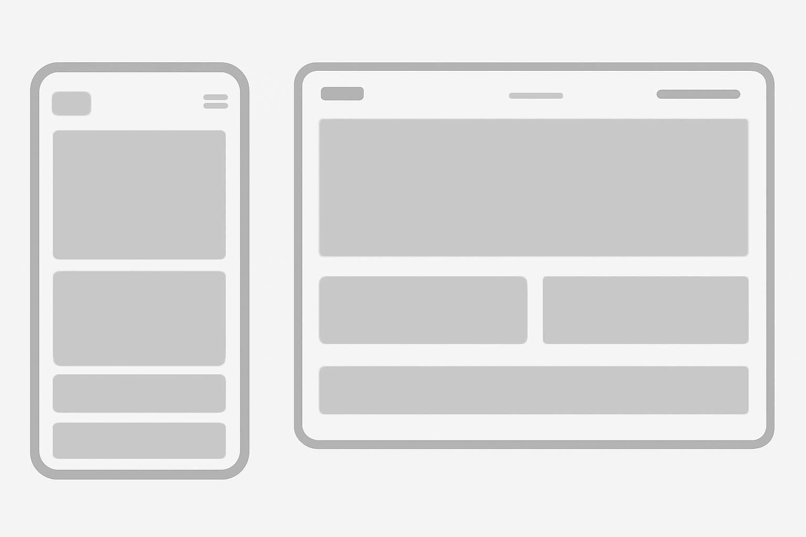

Universe of Games – Portal for Casual Gamers
This name was chosen because it clearly reflects the site's focus on providing information and entertainment for casual gamers without technical complications.
"Universe of Games" aims to be a portal dedicated to casual gamers, offering news, recommendations, and trivia about accessible and fun games without requiring advanced technical knowledge.
Main Color: #6A0DAD (Purple) – Used for headings and buttons.
Secondary Color: #FFC107 (Yellow) – Used for backgrounds and highlighting important sections.
Main Font: Roboto – Used for headings.
Secondary Font: Arial – Used for the body text and paragraphs.
Home Page for Desktop:
[Header] - Logo - Navigation Menu - Search Bar [Main Content] - Popular Games Carousel - Featured News - Links to Sections (Tips and Recommendations, Community) [Footer] - Contact Links, Social Media
Home Page for Mobile:
[Header] - Logo - Compact Navigation Menu [Main Content] - List of Popular Games in Vertical Format - News and Links [Footer] - Essential Links 